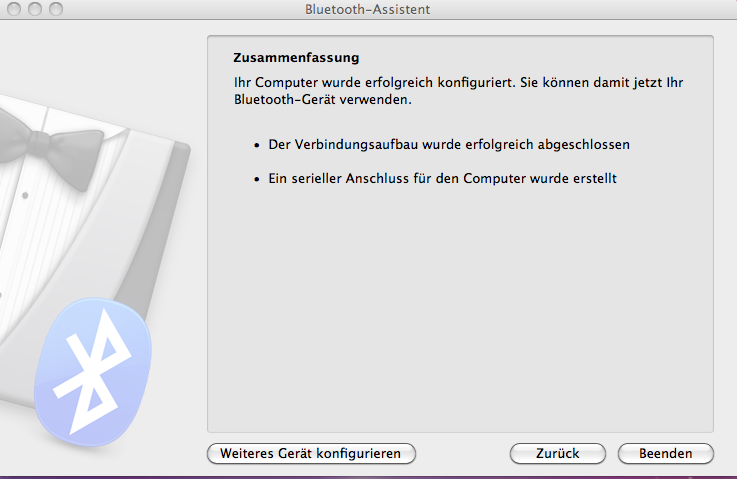
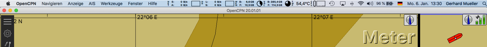

Einrichtung von GPS
Um OpenCPN mit GPS zu verwenden, wird ein GPS Empfänger benötigt.
Es gibt eine Vielzahl möglicher GPS Receiver zur Auswahl:
Inzwischen wurde auch der unter Linux bekannte gpsd Daemon unter Mac OS X erfolgreich getestet, siehe weiter unten. Damit wird es möglich, z.B. das eingebaute GPS eines iPhone als GPS-Empfänger für OpenCPN zu verwenden.
Der Verfasser dieses Beitrags beschreibt hier die Verwendung von OpenCPN mit einem dedizierten Bluetooth GPS Receiver. Die Erläuterungen für einen dedizierten Receiver sind jedoch ähnlich für jeden mit seriell/USB angeschlossenen NMEA Datenstrom.
Ein dedizierter GPS Receiver
Es gibt viele Hersteller für dedizierte GPS Receiver. Der Bereich "Supplementary Hardware" auf der opencpn.org Seite listet mehrere Hersteller von GPS Geräten auf.
NMEA ist traditionell implementiert als ein serielles Protokoll und braucht daher, selbst wenn eine USB Verbindung benutzt wird, eine USB zu Seriell-Port (RS232) Umwandlung. Entweder macht ein spezieller Treiber für jeden GPS Receiver mit USB Kabelanschluß diese Umwandlung oder es wird bei einem GPS Receiver mit seriellem Kabelanschluß ein zusätzlicher RS232/USB Adapter verwendet (der Mac hat keinen seriellen Stecker). Bei Verwendung eines USB GPS Receivers ist also darauf zu achten, daß das Gerät auch einen Treiber für Mac OS X hat. Das gilt auch für einen RS232/USB Adapter, wenn ein serieller GPS Receiver verwendet wird. Als sehr stabiler Adapter kann hier der Keyspan USA-19HS USB-Serial-Adapter empfohlen werden. Wird ein Bluetooth GPS Receiver (auch GPS Maus genannt) verwendet, erfolgt die Umwandlung im Computer, d.h., diese GPS Maus sendet über das Bluetooth SPP Profil an einen im Computer einzurichtenden virtuellen seriellen COM Port. Es werden somit keine weiteren Treiber benötigt. Im Folgenden wird eine Bluetooth GPS Maus beschrieben, es gilt sinngemäß für andere Geräte.
Diesen vor etwa 10 Jahren verwendeten RBT-1000 GPS Empfänger gibt es wahrscheinlich gar nicht mehr. Ich bin aber Bluetooth treu geblieben und verwende jetzt einen XGPS160 von Dual Electronics. Dieser unterstützt auch Glonass jedoch noch nicht Galileo. Da sich ansonsten nichts ändert, habe ich es im weiteren bei der Beschreibung des RBT-1000 belassen.
Konfiguration eines Bluetooth RBT-1000 Receivers (GPS Maus)

Die Installations Disk ist für die Einrichtung eines RBT-1000 bei Mac OS X nicht erforderlich. Die dort enthaltenen Programme sind nur für Windows, Windows-CE oder Palm-OS vorgesehen. Muß oder soll dieser GPS Receiver neu konfiguriert werden oder seine Konfiguration überprüft werden, geht das nur mit einem dieser Betriebssysteme:
Die hier gezeigten Einstellungen der Konfiguration gelten beispielhaft für den RBT-1000 GPS Receiver und können bei anderen Geräten anders aussehen. Ziehen Sie dazu die Dokumentation des jeweiligen Gerätes zu Rate. Falls einstellbar, muß auf jeden Fall der NMEA Modus aktiviert sein wie hier.
Ist das Gerät betriebsbereit, wird es im nächsten Schritt dem Computer bekannt gemacht. Bluetooth muß dazu auf dem Mac aktiviert sein, entweder über die Systemeinstellungen/Bluetooth oder das Kontextmenü, das sich mit Klick auf das Bluetooth-Zeichen in der Menüleiste oben öffnet, wenn in den Systemeinstellungen/Bluetooth dieser Menüeintrag aktiviert ist. Wir wählen dort "Bluetooth-Gerät konfigurieren...":
Die folgende Konfiguration sollte automatisch erfolgen:

Anschließend gehen wir nochmal in die Systemeinstellungen/Bluetooth:
Und fügen für die Bluetooth GPS Maus den seriellen Anschluß RS-232 hinzu. Die Computer-Einrichtung ist damit beendet und bleibt für die folgenden Starts erhalten.
Jetzt noch in den Einstellungen von OpenCPN unter Verbindungen in den Eigenschaften den Port aus der Klappliste wählen, die richtigen Parameter einstellen (Bild), die vom Gerät unterstützte Baudrate eintragen (normalerweise 4800) und eventuell zur Kontrolle "Zeige NMEA-Datenfluß" aktivieren (siehe Bild unten) und die Einrichtung von GPS ist fertig:
Wie man sieht, sind alle seriellen Geräte in /dev/cu.* zu finden. Eine Auflistung kann man daher im Terminal auch mit dem Befehl ls /dev/cu.* erhalten.
In diesem Beispiel ist zudem noch ein Keyspan USA19H RS232/USB-Adapter konfiguriert mit 38400 Baud, der die vom UKW-Seefunk kommenden seriellen AIS-Daten in OpenCPN übernimmt. Hat man keinen AIS-Datenempfänger zur Verfügung, kann man zumindest zu Hause mit einer Internet-Verbindung AIS-Rohdaten von bestimmten Quellen im Internet beziehen und so mal AIS mit OpenCPN testen. Im Beispiel unten wurde solch ein Sender in San Francisco konfiguriert:
Man muß dann natürlich auf der OpenCPN-Karte in das Gebiet von San Francisco gehen, um die Schiffe dort zu sehen.
Mit der neuen Geräte-Schnittstelle von OpenCPN sind jetzt also sowohl serielle (virtuelle) als auch Netzwerk-Anschlüsse möglich. Zudem können Ein- und Ausgänge
nach bestimmten Daten-Sequenzen gefiltert werden.
Eine weitere Möglichkeit zum Testen von AIS, ohne zunächst einen AIS Empfänger zu haben, der AIS Daten an OpenCPN sendet, ist die Verwendung des VDR Plugins (Voyage Data Recorder). Mit seiner Abspielfunktion können aufgenommene Daten dargestellt werden. Haben Sie das VDR Plugin installiert, spielen Sie mit der VDR Play Funktion die Datei Rausch.nmea ab, die Sie hier herunter geladen und entpackt haben. Sehen Sie dann Schiffe im Bereich Breite 44.27 Länge 14.68 zwischen Italien und Kroatien, wenn Sie Ihre Karteansicht dorthin bewegen.
Oben rechts auf dem OpenCPN-Bildschirm zeigen die Symbole den Zustand des GPS an (siehe hier), unten links auf der Statusleiste werden Länge und Breite des Schiffsortes sowie Geschwindigkeit und Kurs über Grund angezeigt.
Sinngemäß werden andere GPS Receiver, AIS Empfänger oder andere NMEA Geräte angeschlossen.
Fehlerbehebung
Das RBT-1000 hat 3 LEDs:
Die linke LED zeigt den Batteriestatus an: Gelbes Dauerlicht bedeutet, die Batterie wird geladen. Rotes Blinken zeigt zu niedrige Batteriespannung an.
Die mittlere LED zeigt an: Bei grünem Dauerlicht ist das Gerät eingeschaltet. Grünes Blinken bedeutet, es wurde ein GPS Fix gefunden.
Die rechte LED blinkt blau, wenn eine Bluetooth-Verbindung besteht.
Die meisten solcher GPS Receiver haben ähnliche Anzeigen. Beachten Sie die zugehörige Dokumentation.
gpsd Daemon bzw. LibGPS Verwendung bei Mac OS X
Dieser Abschnitt richtet sich an versierte Mac OS X Anwender, da viele Eingriffe in das Betriebssytem erforderlich sind. Hat man ein iPhone zur Verfügung, kann sogar dessen GPS Funktion für OpenCPN verwendet werden.
Voraussetzungen sind: Kenntnisse der Shell (bash), installiertes MacPorts für die gpsd Library und Python sowie evtl. ein iPhone oder eine andere Quelle zum Empfang von GPS Daten.
Da man auf dem iPhone keine eigenen Programme installieren kann (jedenfalls wenn es nicht mit einem sog. JailBreak geknackt worden ist), besteht der Trick zur GPS-Nutzung des iPhone darin, auf dem Mac OS X Computer mit OpenCPN ein Python-Skript zu starten, das einen WebServer einrichtet, gpsd startet und die Brücke zwischen dem iPhone und gpsd am Besten über eine WiFi Verbindung bildet. Eine Verbindung über USB oder Bluetooth wäre auch möglich, beste Ergebnisse wurden jedoch mit WiFi bei einem vorhandenen Netzwerk oder einer Adhoc Verbindung erzielt. Es kann auch ein iPad verwendet werden, wenn es ein iPad mit 3G ist, da nur diese ein ein vollwertiges GPS haben. iOS-Versionen von iPhone oder iPad sind egal.
Wurde alles richtig eingerichtet (siehe weiter unten), dann wird auf dem iPhone oder iPad der Safari Browser gestartet und als WebAdresse die IP-Adresse des Mac Computers eingegeben:
Safari lädt die Datei index.html vom Mac Computer, die nun die Bilder oben anzeigt. Mit dem Button "Find" kann zunächst ein Fix geholt werden. Die Felder "Lat", "Lon", "Acc", "Time" werden mit Daten gefüllt und in den Feldern "Resp" und "Pend" kann beobachtet werden, wie und ob die Daten weitergeleitet werden. COG und SOG Daten sind leider nicht verfügbar. Der Hinweis unten auf der Seite besagt, daß iPhone oder iPad keine automatische Sperre haben dürfen, sonst würde das Programm unterbrochen.
Ein Fehler im Python-Skript, der weder vom Programmierer Balint noch von mir bisher behoben werden konnte, stoppt die Datenübertragung nach einiger Zeit, wenn der gpsd Daemon nicht vorher einen Client bedienen kann. Abhilfe ist also wie folgt:
In OpenCPN wird dann als GPS-Quelle die LibGPS angegeben wie im Bild unten mit localhost als GPSD-Datenserver:
(Noch nicht getestet mit OpenCPN-Versionen ab 3.2!)
Bild noch aus OCPN 3.0.2 (alt)
Im GPS Status-Symbol oben rechts von OpenCPN wird dann nur der aktive GPS-Status angezeigt, nicht aber die Balken mit der GPS-Signalstärke, da diese nicht verfügbar sind. Unten links in der Statuszeile von OpenCPN sieht man auch die aktiven GPS-Daten. Ein verwertbares GPS-Signal zeigt der GPS-Poller in der Zeile "Acc" auf dem iPhone oder iPad an. Ist dieser Wert gleich oder kleiner 100, ist das Signal gut. Werte größer 100 werden vom gpsd Daemon verworfen. In dem Fall sollte ein besserer Standort für das iPhone gesucht werden (freie Sicht zum Himmel).
Erforderliche Software
Installieren Sie zunächst MacPorts. Und dann mit MacPorts die Module Python26 und gpsd.
Dann wird die Software von Balint gebraucht. In der Datei iPhone-gpsd.py muß noch vor der Zeile mit "import gps" eine Zeile mit
sys.path.append('/opt/local/lib/python2.6/site-packages/gps')
eingefügt werden, damit das Python-Skript die erforderlichen Python-Dateien von gpsd findet. Das sind u.a. die Dateien __init__.py, client.py, gps.py. Prüfen Sie, ob dieser Pfad oben bei Ihnen zutrifft.
Nachdem Sie das Python-Skript wie oben in der Shell gestartet haben, sollte als Ausgabe etwas erscheinen wie:
Current directory: /Users/Anwender/Documents/sw/HilfsProgramme-Docs/GPS/iPhone-gpsd GPSd running Added /dev/ttys002 HTTP Server running...
Der Pfad und das Device /dev/... wird bei Ihnen anders aussehen.
Alternative
Etwas einfacher als oben und auch zuverlässiger geht es mit einer Kauf-App aus dem App-Store (etwa 6 Euro). Die App "GPS2ip" läuft auf iPhone oder iPad mit mindestens iOS 4.3 und vollwertigem GPS, also auf See nicht mit einigen iPads. Der bei einen iPhone probierte Betrieb verbraucht allerdings schnell die Batterie, so daß es an einer Stromquelle hängen sollte. Im Beispiel hier die Konfiguration mit einem vorhanden WLAN-Router.
Beim Start zeigt die App die verwendete Server IP (hier 192.168.0.52) und die Port-Nummer 11123. Zunächst müssen dann die Einstellungen vorgenommen werden.
Aktivieren Sie nur die 4 gezeigten NMEA-Sequenzen und nicht HDG.
Dann noch Bedienung im Hintergrund aktivieren und in den allgemeinen Einstellungen des iPhones die automatische Sperre auf "Nie", da anderenfalls bei mir die Verbindung abbrach.
Ist GPS2ip dann mit dem Schalter oben rechts im Bild aktiviert, erscheinen im Bild die NMEA-Sequenzen und ein Kartenausschnitt mit dem blinkenden Standort. Wurde nun auch OpenCPN mit den Parametern wie unten im Bild konfiguriert, erscheint unter angeschlossene Clients die IP Adresse des Computers, auf dem OpenCPN läuft (Bild oben).
GPS2ip ist recht flexibel und unterstützt auch weitere Verbindungsmöglichkeiten über Ad-Hoc, UDP oder GPSD. Es ist auch eine Verbindung über Bluetooth möglich.
Wurde die Verbindung unterbrochen, muß GPS2ip beendet und aus dem Speicher des iPhone/iPad entfernt werden, bevor es wie oben neu gestartet wird.
Weitere GPS Datenquellen
Als GPS Datenquelle kann nicht nur eine GPS Maus (USB oder Bluetooth), ein GPS Gerät, das seriell mit dem NMEA0183 Protokoll die Daten übertragen kann oder wie gezeigt ein iPhone oder iPad verwendet werden. Auch ein Handy mit dem Android Betriebssystem und eingebautem GPS ist möglich, wenn man die Geduld und das technische Verständnis dazu mitbringt. Für Android gibt es hierzu BlueNMEA.
GPS Status

Der GPS Status wird oben rechts angezeigt. Im Splitbildschirm erscheint sie zweimal wie in dem Bild oben.
In der Standard Einstelung wird das eigene Schiff als graues Symbol angezeigt, wenn kein gültiger GPS Fix verfügbar
ist. Mit GPS Signal ist das eigene Schiffs-Symbol rot  .
.
 Kein GPS oder ungültige GPS Daten.
Kein GPS oder ungültige GPS Daten.
 Aktive/gültige GPS Daten
Aktive/gültige GPS Daten
 Aktive/gültige GPS Daten + GPS meldet 0 - 4 Satelliten
Aktive/gültige GPS Daten + GPS meldet 0 - 4 Satelliten
 Aktive/gültige GPS Daten + GPS meldet 5 - 9 Satelliten
Aktive/gültige GPS Daten + GPS meldet 5 - 9 Satelliten
 Aktive/gültige GPS Daten + GPS meldet mehr als 10 Satelliten
Aktive/gültige GPS Daten + GPS meldet mehr als 10 Satelliten
Der GPS-Status kann auch detaillierter mit dem Plugin Dashboard angezeigt werden.